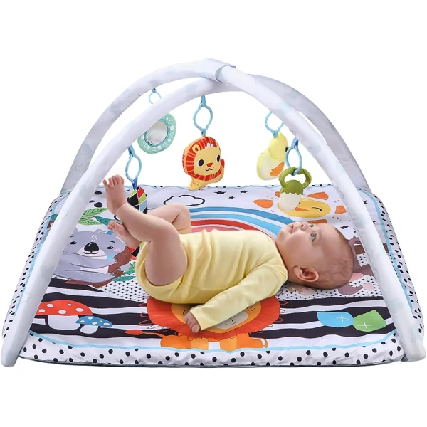
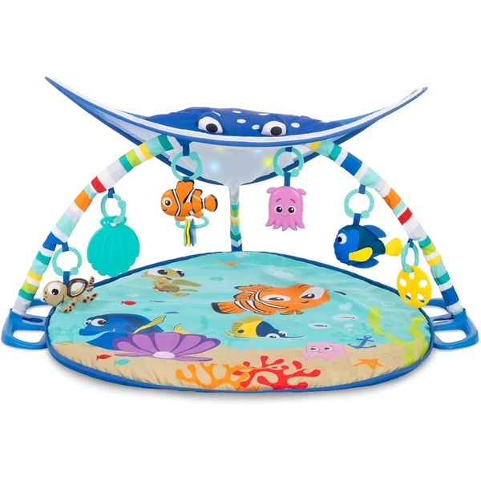
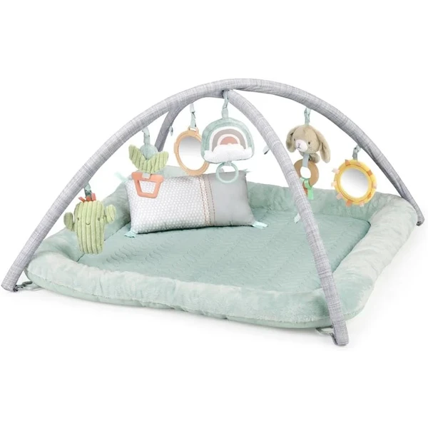
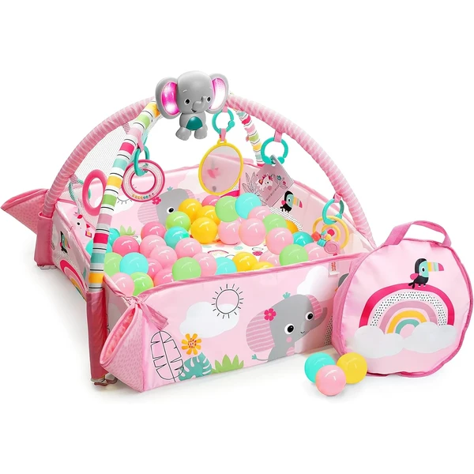
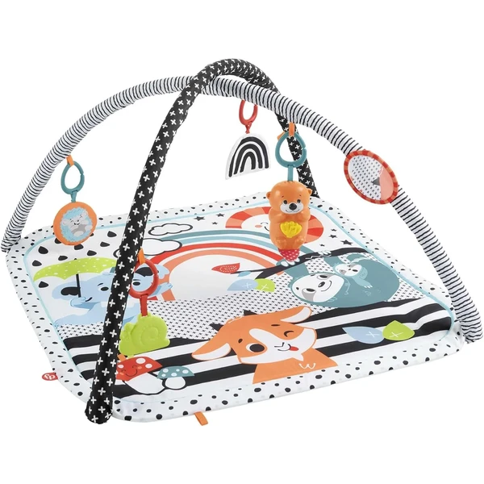

Manta de juegos con arco desmontable
Una manta de juego acolchada con un arco del que cuelgan cinco juguetes desmontables. Pensada para el tiempo boca abajo, favorece que el bebé fortalezca el cuello y la espalda mientras explora los colgantes.
⭐ ¿Por qué nos gusta?
- ✔ Cinco juguetes desmontables y reutilizables.
- ✔ Favorece el tiempo boca abajo y el fortalecimiento del cuello.
- ✔ Fácil de plegar y llevar de viaje.
💬 Lo que más destacan las familias
Los compradores valoran especialmente que los juguetes se puedan quitar del arco y usar por separado, así el bebé no se cansa siempre de lo mismo. También se comenta que anima bastante al tiempo boca abajo, porque los colgantes le dan un motivo para levantar la cabeza.
Ver en Amazon

Baby Einstein Kickin' Tunes 4en1
Un gimnasio de actividades musical con piano interactivo, más de 70 sonidos y 25 minutos de música y luces. Se adapta a 4 modos de juego distintos: tumbado, sentado, boca abajo y portátil.
⭐ ¿Por qué nos gusta?
- ✔ Piano interactivo con más de 70 sonidos.
- ✔ 4 modos de juego: tumbado, sentado, boca abajo y portátil.
- ✔ 7 juguetes separables incluidos.
💬 Lo que más destacan las familias
Muchos padres coinciden en que el piano es lo que más engancha al bebé, ya que responde al tacto con sonidos y luces. Los 4 modos de uso también se valoran porque acompañan al bebé durante mucho tiempo.
Ver en Amazon

Bright Starts Buscando a Nemo
Un gimnasio de actividades con la temática de Buscando a Nemo, con más de 20 minutos de melodías marinas y un toldo que se ilumina con luces. Incluye una marioneta de Dory y varios juguetes multisensoriales.
⭐ ¿Por qué nos gusta?
- ✔ Más de 20 minutos de melodías marinas.
- ✔ Toldo con luces y marioneta de Dory incluida.
- ✔ Personajes muy reconocibles de la película.
💬 Lo que más destacan las familias
Entre los comentarios más habituales aparece lo bien recibido que resulta gracias al diseño de Buscando a Nemo, muy familiar para toda la familia. Las luces del toldo también se valoran porque captan mucho la atención del bebé.
Ver en Amazon

Tiny Love Luxe Developmental Gymini
Un gimnasio de actividades elegante con arco de madera independiente y 20 actividades distintas, con música al tocar la barriguita de su personaje. Incluye 12 tarjetas mensuales de logros para acompañar el primer año.
⭐ ¿Por qué nos gusta?
- ✔ 20 actividades distintas incluidas.
- ✔ Arco de madera independiente, diseño elegante.
- ✔ Incluye 12 tarjetas mensuales de logros.
💬 Lo que más destacan las familias
Lo que más suele gustar es el diseño estético, que combina bien con la decoración de cualquier habitación. Las tarjetas de logros también se valoran porque ayudan a seguir la evolución del bebé mes a mes.
Ver en Amazon

Ingenuity Calm Springs
Un gimnasio de actividades acolchado con superficie de bambú y algodón, con 6 juguetes desmontables y un arco removible. Combina estímulos físicos y sensoriales en una manta amplia y fácil de lavar.
⭐ ¿Por qué nos gusta?
- ✔ 6 juguetes desmontables, incluido uno de madera natural.
- ✔ Superficie acolchada de bambú y algodón.
- ✔ Manta amplia, se lava fácilmente en lavadora.
💬 Lo que más destacan las familias
Se repite bastante el comentario de que la superficie es especialmente suave y cómoda para el bebé. Que sea lavable a máquina también se valora mucho para el uso diario.
Ver en Amazon

Bright Starts Rainbow Tropics 5-en-1
Un gimnasio de actividades que se transforma en piscina de bolas a medida que el bebé crece, con 40 bolas y maletín de transporte incluidos. El elefante musical se ilumina y reproduce más de 20 minutos de música.
⭐ ¿Por qué nos gusta?
- ✔ Se transforma en piscina de bolas con el tiempo.
- ✔ Incluye 40 bolas y maletín de transporte.
- ✔ Elefante musical con luces, más de 20 minutos.
💬 Lo que más destacan las familias
Una característica muy mencionada es que crece con el bebé al convertirse en piscina de bolas más adelante, alargando su vida útil. El maletín de transporte también se valora para llevarlo de viaje.
Ver en Amazon

lionelo Anika 2en1
Una colchoneta educativa que también funciona como corralito gracias a sus laterales con velcro, con 5 juguetes interactivos y un cojín para el tiempo boca abajo. Ligera y plegable para llevarla a cualquier parte.
⭐ ¿Por qué nos gusta?
- ✔ Función 2 en 1: colchoneta y corralito.
- ✔ 5 juguetes interactivos incluidos.
- ✔ Ligera y plegable, fácil de transportar.
💬 Lo que más destacan las familias
Muchos padres destacan lo práctico que resulta que se convierta en corralito según va creciendo el bebé. El grosor de la colchoneta también se valora porque aísla bien del frío del suelo.
Ver en Amazon

Fisher-Price Musical 3en1
Un gimnasio de actividades que crece con el bebé desde recién nacido hasta el juego boca abajo, con una nutria portátil que reproduce hasta 15 minutos de música y luces. Incluye 5 juguetes de alto contraste visual.
⭐ ¿Por qué nos gusta?
- ✔ Crece con el bebé en 3 etapas distintas.
- ✔ Nutria portátil con música y luces.
- ✔ 5 juguetes incluidos, colores de alto contraste.
💬 Lo que más destacan las familias
Lo que más suele gustar es que la nutria musical se pueda quitar y llevar aparte, útil incluso fuera del gimnasio. Los colores de alto contraste también se valoran para estimular la vista del bebé recién nacido.
Ver en Amazon

Fisher-Price Selva Tropical 3en1
Un gimnasio con temática de selva tropical que se adapta al crecimiento del bebé, con un perezoso interactivo que reproduce hasta 20 minutos de música y luces. Incluye 6 juguetes distintos repartidos por el arco ajustable.
⭐ ¿Por qué nos gusta?
- ✔ Se adapta a 3 etapas de crecimiento del bebé.
- ✔ Perezoso interactivo con música y luces.
- ✔ 6 juguetes distintos, arco ajustable.
💬 Lo que más destacan las familias
Entre los comentarios más habituales aparece lo bien pensado que está el cojín de apoyo para el tiempo boca abajo. El perezoso interactivo también se valora porque anima mucho al bebé con su música y luces.
Ver en Amazon

Lilian&Gema Gimnasio Desmontable
Un gimnasio de actividades grande que se transforma en soporte de gimnasia, colchoneta boca abajo o recinto protector según lo necesite el bebé. Incluye 6 juguetes sensoriales desmontables con distintos efectos de sonido.
⭐ ¿Por qué nos gusta?
- ✔ Se transforma en varias configuraciones distintas.
- ✔ 6 juguetes sensoriales desmontables.
- ✔ Diseño antideslizante para mayor seguridad.
💬 Lo que más destacan las familias
Muchos padres coinciden en que la posibilidad de transformarlo en distintas configuraciones alarga mucho su vida útil. El tamaño amplio también se valora porque da bastante espacio para moverse.
Ver en Amazon